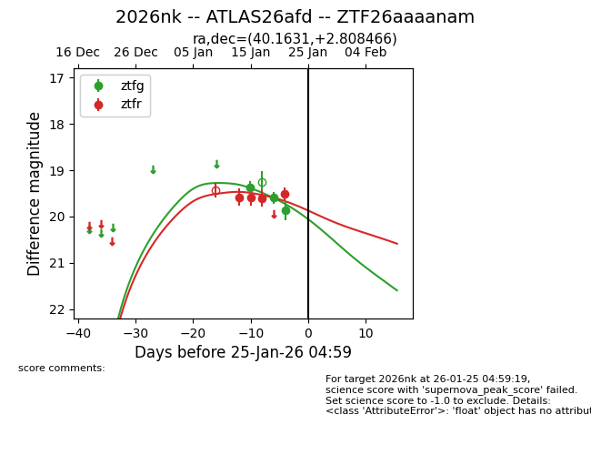
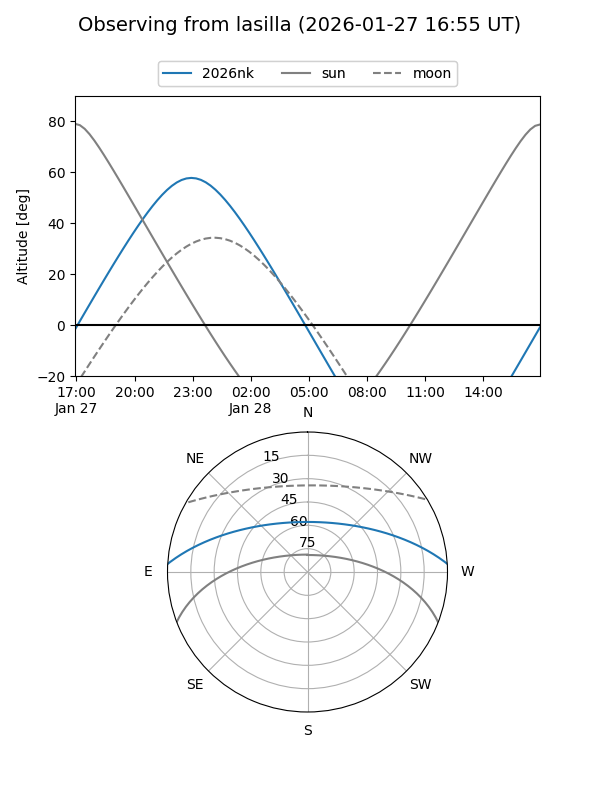
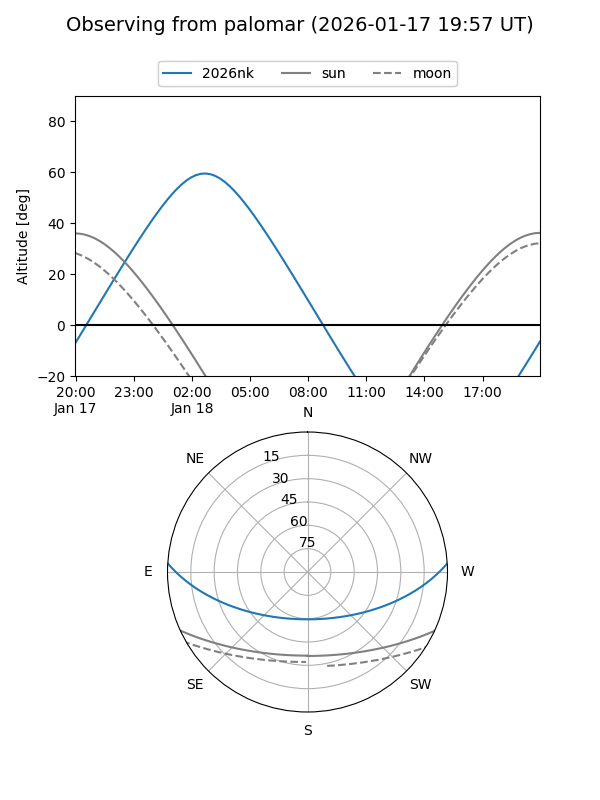
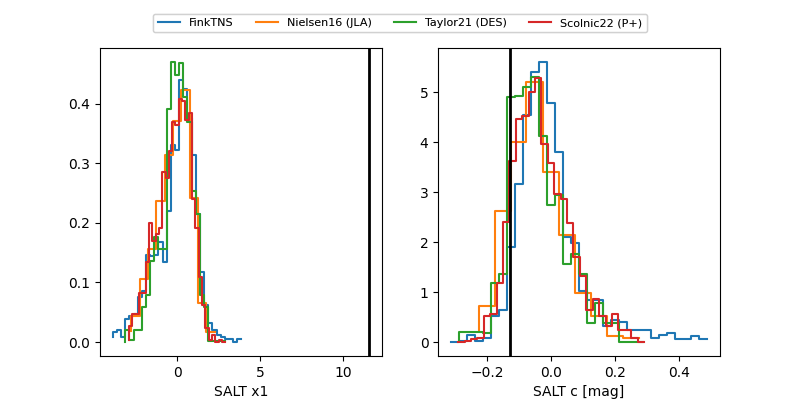

2026nk
Target 2026nk at 2026-01-18 08:35
Aliases and brokers:
FINK: link
Lasair: link
ALeRCE: link
TNS: link
YSE: link
alt names
ZTF26aaaanam (ztf,fink_ztf)
2026nk (tns,yse)
ATLAS26afd (atlas)
Coordinates:
equatorial (ra, dec) = 40.1631,+2.80847
equatorial (HMS+DMS) = 02:40:39.14,+02:48:30.48
galactic (l, b) = (168.5546,-50.13360)
Flags:
Photometry:
last ztfg=19.37, ztfr=19.61
1 ztfg, 3 ztfr detections
Lightcurve

Visibility


Additional plots
